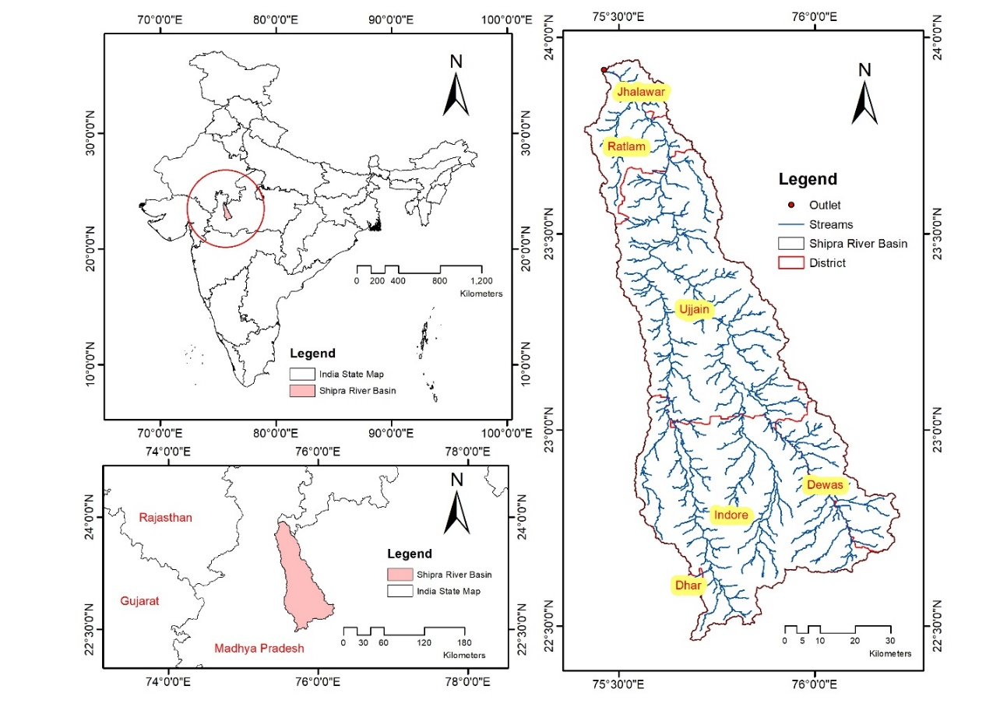
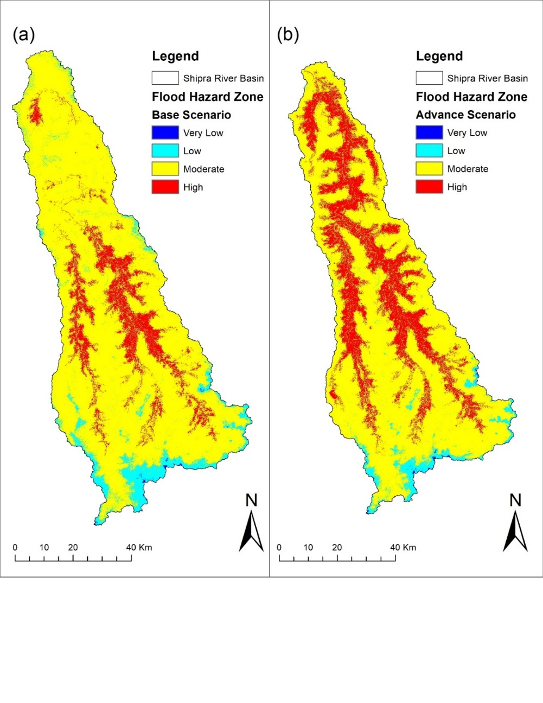
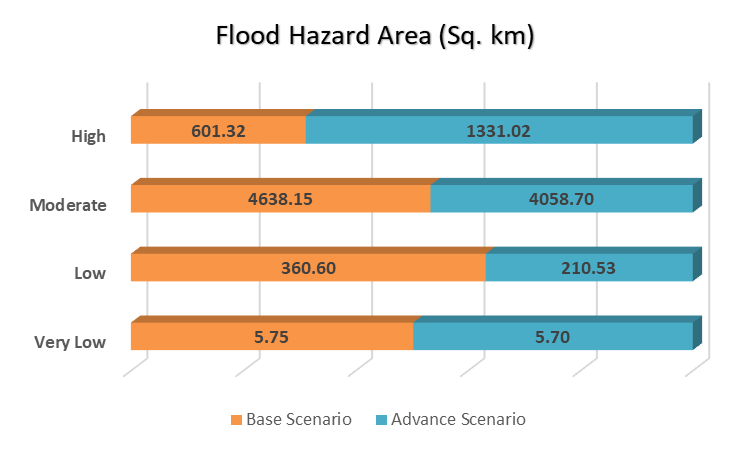
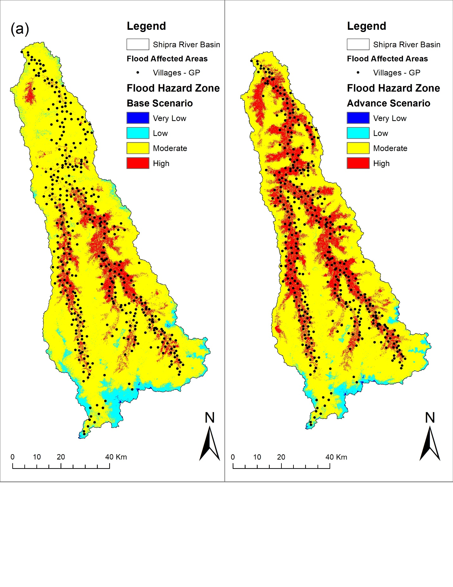

Flood Hazard Mapping with AHP, GIS, and Remote Sensing Techniques in the Context of Climate Change for Shipra River Basin, India
This study combines GIS, remote sensing, Analytic Hierarchy Process (AHP), and rainfall change-point analysis to map flood hazard in the Shipra River Basin. It compares a base scenario (1950–2005) with an advance scenario (2006–2022); the study found high-hazard areas expanded in the advance scenario.



